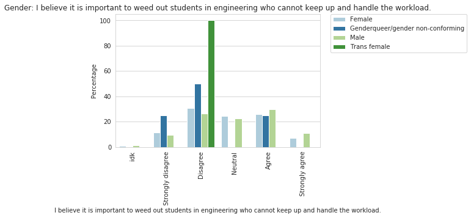

We have to be here
As the oldest child of Mexican immigrants, Jonathan was the go-to person for all things tech in his family. That ranged from making a CD with music to installing a printer. Through it all, he took this unsaid responsibility with pride and passion, fueling a drive to pursue computer science.
His decision to study computer science was also inspired by his father, who had earned the equivalent of an associate’s degree back in Mexico for Computer Science but was unable to continue his education. “In a way, it was kind of like finishing off what my dad had started,” the sixth-year Computer Science (CSC) student said thoughtfully.
"In a way, it was kind of like finishing off what my dad had started."
-Jonathan, Sixth-Year, Computer Science
However, he questioned if he had chosen the right major. “I would definitely see my classmates understand the language faster, pick it up faster and I would talk to some of them and they would have previous experience with like programming and coding.... whereas I had just began like a quarter ago,” he said. In his mind he struggled more than the “average computer science student.”
What achievement gaps exist for students of color pursuing engineering at Cal Poly?
Source of Data: CSU Success Dashboard
Some of his academic struggles were due to the very individualistic culture of the computer science culture, as he described. He noted that it was more likely that students would go unnoticed. He also realized that stereotypes about computer scientists impacted his own behavior in his college career. “Because I would think, engineers are shy in general or tend to be quiet, I limited myself in being more open or asking for help,” he said.
It didn’t help that he felt unable to connect with his peers. As he observed that his peers would gradually form established groups of friends in the major and pair up in group projects, he saw himself as an outsider, one who would eventually join whatever group that needed an extra person.
It was difficult to find other students from similar backgrounds like himself. “I was always like kind of one of the only – if not the few – Hispanic or brown students in the classroom,” Jonathan said.
In hopes of finding his support system, he checked out major-related clubs but felt a lack of belonging due to the lack of diversity. “As much as I wanted to have more experiences with my major, the environment for me, I don’t know... I don’t want to say unwelcoming – it's not like they were pushing me away – but at the same time, I didn’t really feel like I fit into those groups at that time,” he reflected.
Outside of these computing spaces, Jonathan has found his circle of friends. Even so, he notes that his presence as a Computer Science major is important for increasing visibility and thus encouraging a future generation of computing students of color. “Maybe I didn’t fit in at Cal Poly at first, but it’s something I’ve grown to accept that needs to happen... or that I needed to be here,” Jonathan said. “Ultimately, we have to be here to improve the experience of others.”
There’s no doubt about it – visibility can be incredibly impactful. Fellow computer scientist Otis will never forget when he was first introduced to computer science by his older brother at the young age of thirteen years old.
“I made websites when I was a kid – showing all my personality traits like how much I liked Lebron James and playing FIFA!”
-Otis, Third-Year, Computer Science
Like other underrepresented students, Jonathan’s very presence redefines what it means to be an engineering student, with the vision of creating a future of engineers who reflect the diversity of all people, working to truly serve the interests of everyone.
Civil Engineering “Still”
Anna identifies as a Latina in engineering – more specifically, a fourth-year Civil Engineering (CE) “STILL!” major. “I’ve stuck with it! Probably not the best choice, honestly,” she mused. Ever since her first year, she had considered switching majors.
Coming into Cal Poly as a 4.0 student in high school, she did not expect to struggle. “The tipping point for me was my classes and feeling like I was failing at them and not really being able to talk to my professors about it because in engineering it’s so focused on the work and not necessarily the person doing the work,” she said.
Similar to Anna, another female student in engineering, Gina, struggled with self-doubt.
“For myself, a lot of it came from having expectations of yourself and then not meeting them... and it’s this self-esteem kind of issue that spirals downwards. That’s kind of what happened to me. It’s not that big of a deal, but I had never really experienced anxiety until I came to Cal Poly.”
-Gina, Third-Year Electrical Engineering
For many of the support classes that Anna had to take for her major, she regards them as “weeder classes,” classes that are notorious for their rigor and failure rates.
How do Cal Poly engineering students feel about weed out culture? 
Looking at the difference opinions through the lens of gender, we can see that women are divided about this issue. Approximately 35% disagree (adding both strongly disagree and disagree), 27% agree (adding both strongly agree and agree), and 22% are neutral. Slightly more men seem to agree, with a percentage of 40% (adding both strongly agree and agree).
Anna remembers late nights staying up until 2 or 3 am every single day, finishing homework for these classes. During class, professors would often tell the class the specific breakdown of how many students are getting what grade, increasing the pressure and stress as students quickly figured out their ranking amongst their fellow peers.
“If there’s one student who got an F, this professor would say, hey whoever that student is, I know you know. You can either come talk to me or drop the class,” Anna said about one experience.
In another one of Anna’s support classes, she distinct remembers what the professor said on the first day of class: “I had one professor say, ‘If you’re doing anything outside of your class, you need to drop everything.’ They were like, this class will take up your entire life.”
Anna was shocked to discover these classes and questioned their role in learning. “It’s like, why? That’s not helping me succeed, you know? As my professor, they should be helping me become a better version of myself and a better student and help me be successful,” she said.
Anna also struggled with her place as a being the only Latina in many of her classes. “I definitely saw a lot more Latinx folks in my class which was comforting, but trying to relate to them... like them fully understanding what I was going through was hard,” she admitted.
Even though Anna had constant thoughts about switching her major due to her hard classes and being one of the few female students of color, switching majors would potentially affect her financial aid. A scholarship she got for college limited her from receiving funds if she was in a non-STEM major and she couldn’t find another major she was interested in. However, she refused to let this get the best of her.
“At that point, it was like... I chose CE and I chose CE for a reason. I focused more on regrounding myself and figuring out why I chose that major to begin with, and figuring out how I could still reach that goal, even though I technically wasn’t happy with the classes I was taking,” she explained.
How many engineering students consider switching their major?
We can see that for women in the minority group, they have considered switching majors much more! Especially for women in the minority group who have considered switching out of engineering. If we add up the total percentages for women who have considered switching majors at all (including both within engineering and outside of engineering), we see that a total of 37% of women in the majority (white & Asian) have considered switching out of their major vs. a total of 51% of women in the minority (black, hispanic, & indigenous).
In doing this, she complemented her major with a City and Regional Planning minor, joining forces to create a more people-oriented curriculum.
Since finishing her support classes, Anna’s coursework has consisted of her major classes – something that Anna enjoys. “Not only do I find my classes a lot more interesting, but it’s more independent work and a more, let’s look at this in depth and do this one assignment in a week instead of one day. Which is really nice personally,” Anna said.
Not only this, but Anna has found community and support within her fellow Civil Engineering students through study groups and even being apart of GroupMe’s for the entire class.
“We really like doing things together which is why a lot of majors say that if you’re in civil engineering, you can’t do it by yourself, you need someone else to do it with you... because it’s one hundred percent true!” she said smiling.
Even though Anna still has doubts about herself in the major, she is proud of her perseverance. “I’m really proud of how far I’ve come and the fact that I’ve stuck with it.”